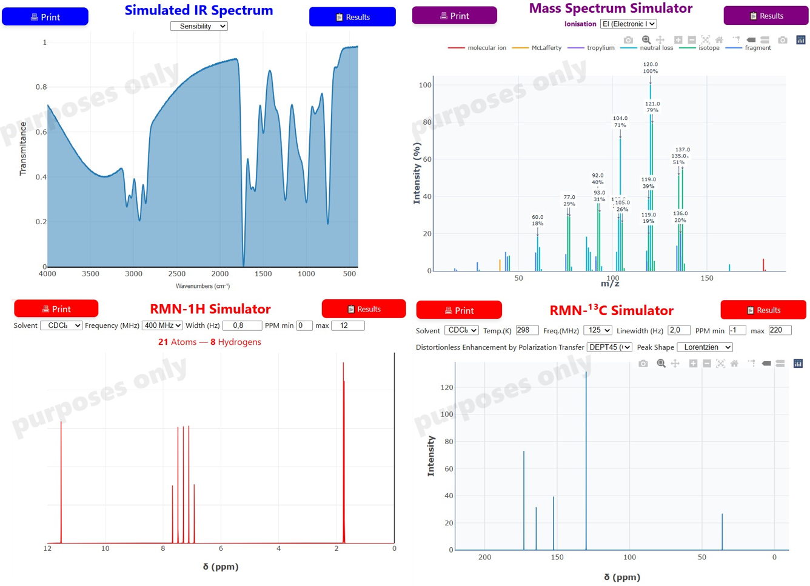

Molecule Spectra - DEMO
MoleMate- Molecule Spectra - User Manual
🔍 Select the organic compound
Enter a compound: You can search by CID number, compound name, or SMILES notation.
Press Enter after typing to search automatically
-------------------or-------------------
Import a file: Click "Import .mol file" to load molecular data from a .mol or .sdf file.
✅ Information on the left panel
MoleMate- Molecule Spectra responses :Name - IUPAC Name - CAS Number - Molecular Formula - Molecular Weight - Lipophilicity - H bonding - H-Bond Donor - Bond Acceptors - Rotatable Bonds- Complexity & Electric Charge
📊 Available and Simulated Spectra on the right panel
Spectrum: Overview of available real spectroscopic data on the web (if any)
RMN H1: Simulated Proton Nuclear Magnetic Resonance
RMN C13: Simulated Carbon-13 Nuclear Magnetic Resonance
IR:Simulated Infrared Spectroscopy
Mass Spectrum:Simulated Mass Spectrometry data
HAZARD: Existing safety information and hazard classification
⚠️ Watch out : it is simulated spectra. Click on any spectrum tab to view detailed analysis
📘 User Manual
Spectrum Simulation

Sélectionnez une molécule dans le panneau gauche pour afficher son spectre.